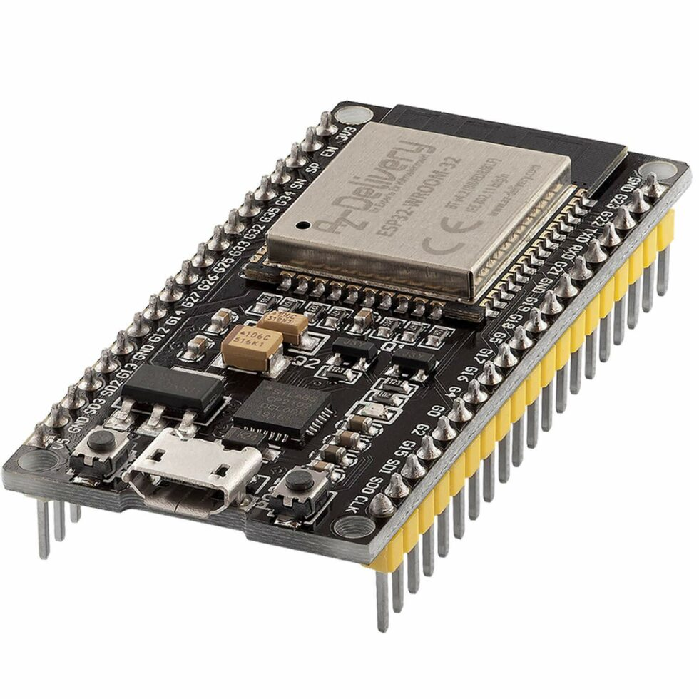
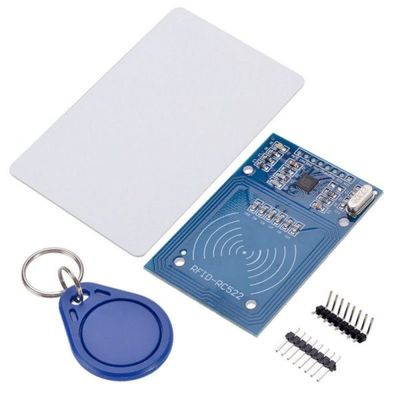
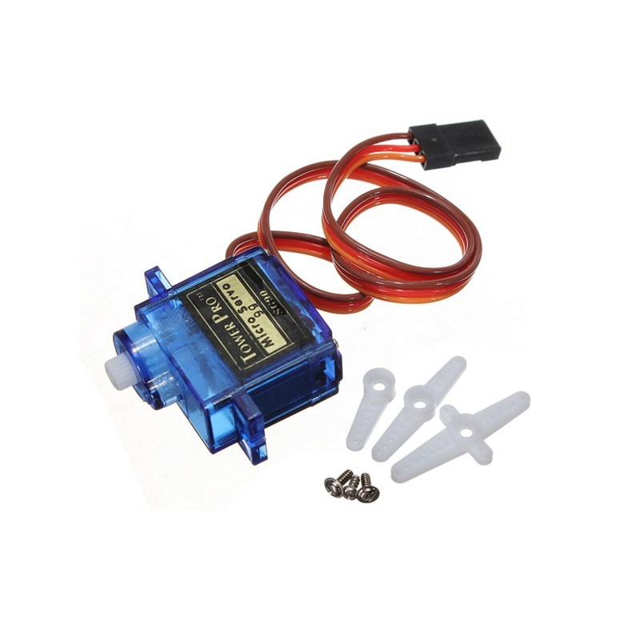

La seguridad y el control de acceso son esenciales en diversos entornos. Este proyecto busca desarrollar una cerradura inteligente con ESP32 y RFID, permitiendo la apertura de puertas mediante tarjetas autorizadas y registrando los accesos en una base de datos para su monitoreo remoto.
Diseñar e implementar un sistema de cerradura inteligente con lector RFID y ESP32 para el control y monitoreo de accesos en un entorno determinado.
Investigación y Diseño: Se estudiarán las tecnologías disponibles y se definirá la arquitectura del sistema.
Selección de Componentes: Se determinarán los módulos electrónicos adecuados para la implementación.
Desarrollo del Hardware: Se realizará el montaje del circuito con el ESP32, el módulo RFID y el sistema de cerradura.
Desarrollo del Software: Se programará el ESP32 para la lectura de tarjetas RFID, el control de la cerradura y la comunicación con una base de datos.
Pruebas y Ajustes: Se realizarán pruebas de funcionamiento, seguridad y confiabilidad.
Implementación y Evaluación: Se instalará el sistema en un entorno de prueba para su evaluación y mejora.

Fuente
Fuente
FuenteSe espera obtener un sistema funcional de cerradura inteligente que permita el acceso solo a personas autorizadas mediante tarjetas RFID. Además, el sistema deberá registrar los accesos en una base de datos y permitir la gestión remota de usuarios. La implementación de esta tecnología contribuirá a mejorar la seguridad y facilitar el control de accesos en diversos entornos, ofreciendo una alternativa eficiente y moderna a los sistemas tradicionales.